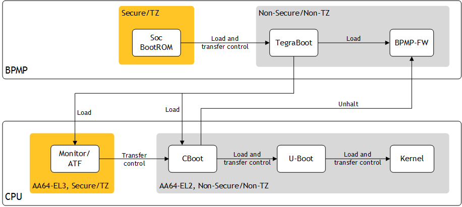
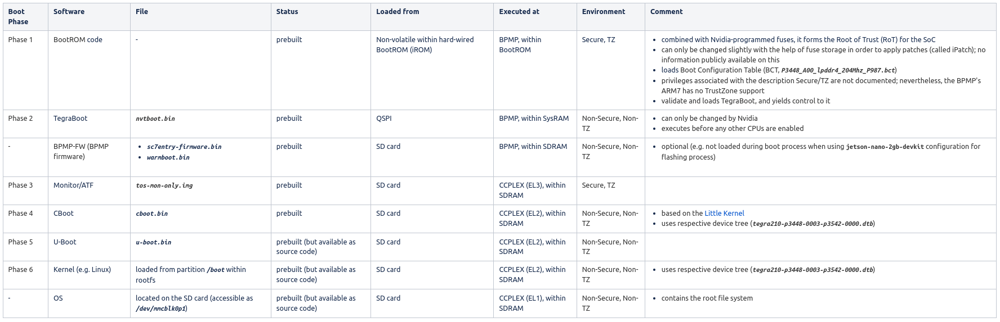

Tegra X1 Bootflow¶
Jetson TX1 Developer Kit¶
tbd
Jetson Nano/Nano 2GB Developer Kit¶
Bootflow¶
The Jetson Nano boot process is split into several individual steps (see here), which are executed by two distinct processors:
Boot and Power Management Processor (BPMP): a dedicated ARM7 co-processor, with 256 KB internal RAM (IRAM) for both code and data, designed to handle the early stages of the boot process and offloading the power management (e.g. entering deep low power state, suspend to ram), clock management (e.g. offloading DRAM memory clock scaling), and reset control tasks from the CPU
at boot
Phase 1: execute boot code stored in hard-wired BootROM (iROM) in Secure/TZ mode to
initialize the boot media (QSPI)
load BootROM Boot Configuration Table (BCT, P3448_A00_lpddr4_204Mhz_P987.bct) from the start of the boot media, which contains
configuration parameters used by the BootROM for hardware initialization
information about the bootloader (BL), e.g. size, entry point, load address and hash
validate and load the bootloader (TegraBoot, nvtboot.bin) from boot media to shared on-chip memory (SysRAM)
Phase 2: execute TegraBoot (a cold boot and a recovery boot/flashing variant exist) from SysRAM to
switch from Secure/TZ to Non-Secure/Non-TZ mode
start releasing console output on the debugging serial port
read PMIC reset section
initialize SDRAM
create memory carveouts
load and initialize firmware (FW) components, depending on selected mode
cold boot: reset or power on
Tboot-CPU (nvtboot_cpu.bin)
Bootloader DTB (tegra210-p3448-0003-p3542-0000.dtb)
Linux Kernel DTB (tegra210-p3448-0003-p3542-0000.dtb)
CBoot (cboot.bin)
NCT (not found)
optional: non-bootloader related code (BPMP-FW) executed by the BPMP
SC7 Entry Firmware (sc7entry-firmware.bin)
Warm boot binary (warmboot.bin)
Monitor/ATF (tos-mon-only.img)
warm boot: resume from a suspended state, requiring a different set of configurations
recovery mode: handle communication to the flash/upgrade path via USB
load the next stage bootloader (Cboot)
load bootloader device tree and pass device tree load address to Cboot
complete CPU initialization
enable CPU power rail
enable CPU clock
perform RAM repair
support flashing
support RCM boot
release/start CPU (CCPLEX) and halt BPMP co-processor
at runtime
BPMP Firmware (BPMP-FW): provides various services related to runtime power management & acts as communication path between CPU and BPMP
runtime core residing mainly in DRAM, but may also affect IRAM
owns particular hardware resources and prevents the CPU from directly accessing them
offers proxy services to give the CPU indirect access
communication between BPMP and CPU via shared memory mailboxes and the PSCI
Linux BPMP firmware driver: used to create create the interprocessor communication (IPC) between the CPU and BPMP, utilizing the binding document
CPU: the actual 64-bit ARM processor, here consisting of 4x ARM Cortex-A57 cores
Phase 3: EL3 Monitor/ATF
executes in EL3
transfers control to CBoot
Phase 4: CBoot - main EL2 bootloader for the CPU
fully fledged SMP aware kernel based off Little Kernel
source code not provided for Jetson Nano: https://forums.developer.nvidia.com/t/jetson-nano-cboot/129542
starts in EL3 mode and begins executing TOS; TOS completetes its initialization and passes control back to CBoot in EL2 mode
uses
DTB to configure the system
I2C EEPROMs on both module and carrier board to perform modifications to the device tree for enabling/disabling nodes and add extra information
loads firmware into USB3 controller
initializes any display
shows a boot image
releases the BPMP & allows to begin executing the previously loaded BPMP-FW
loads U-Boot & transfers control to it
Phase 5: U-Boot
access to programmable fuses allow to store keys for secure boot/signed binaries → U-Boot can use signed FIT images, providing a secure boot up to the Linux kernel
loads the Linux kernel & transfers control to it
Phase 6: Linux kernel

Binaries¶

Data61 |
Comment |
Status |
Task |
|---|---|---|---|
okay |